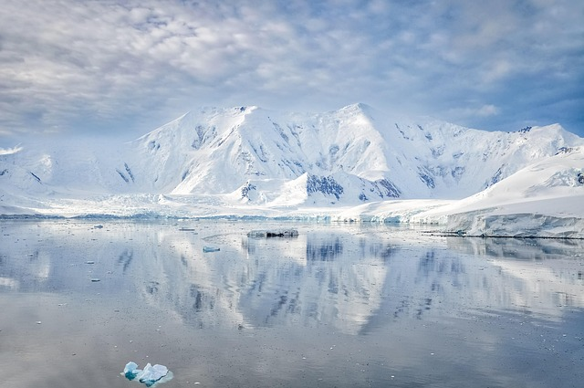

Geography of Antarctica
The Frozen Continent
Antarctica is Earth's southernmost continent, containing the geographic South Pole. Add more content from Wikipedia here.

"Antarctica is a natural reserve, devoted to peace and science."
Ice Sheets and Glaciers
Add content about ice sheets here from Wikipedia.
Climate
Add content about climate here from Wikipedia.
Mountains and Valleys
Add content about mountains here from Wikipedia.